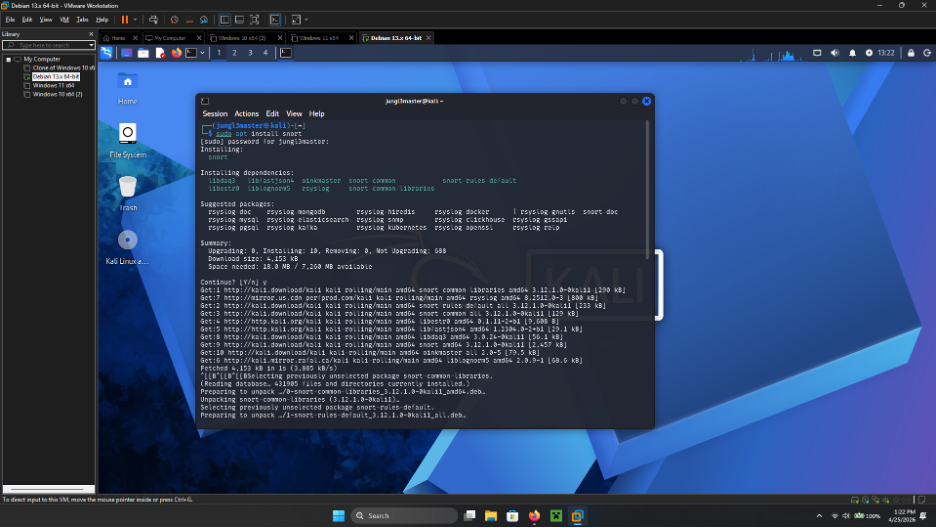
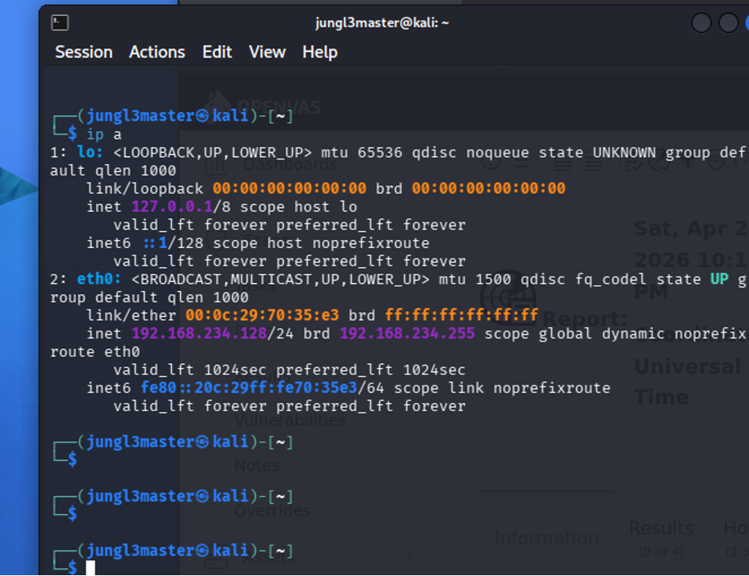
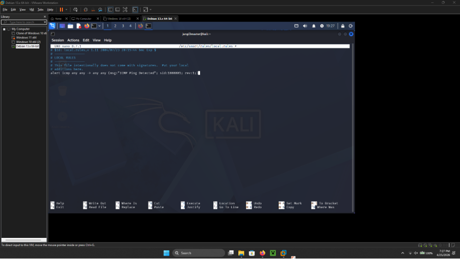
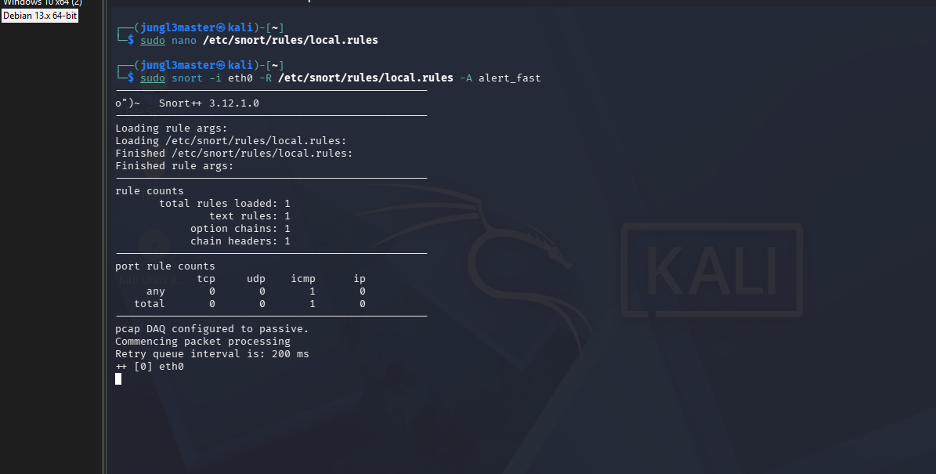
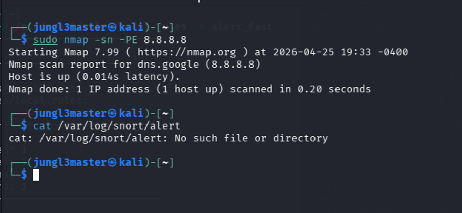
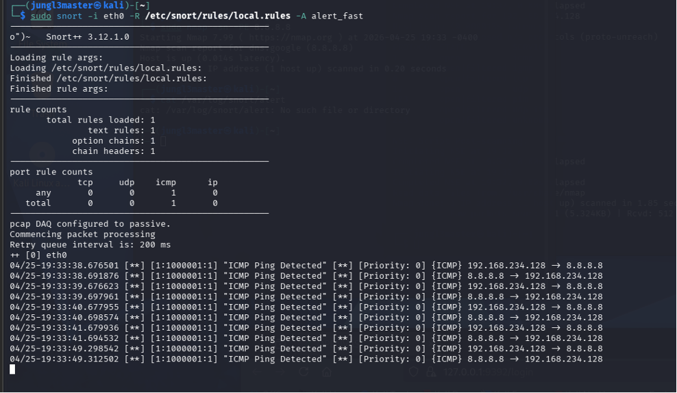
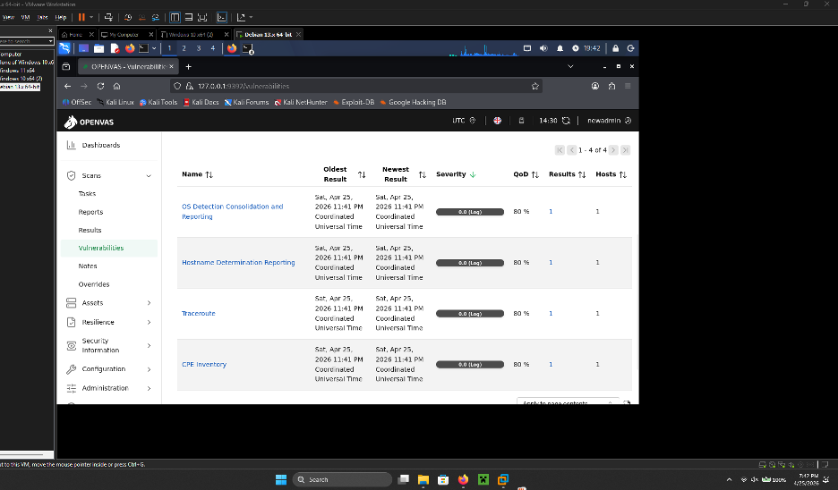

01
Rebuilding the lab
I began by installing Snort on a Kali virtual machine, then installed OpenVAS. During setup, I rebuilt the VM with a 100 GB virtual disk, 10 GB of RAM, and four processor cores so the vulnerability scanner had more room to operate.


02
Identifying the monitored interface
I used ip a to confirm the active adapter and its lab address. The VM was using
eth0 with the address 192.168.234.128/24, which is the interface I
selected when starting Snort.


eth0
interface.03
Writing a broad ICMP detection rule
I added the following local rule so that Snort would report ICMP packets moving in either direction:
alert icmp any any -> any any (msg:"ICMP Ping Detected"; sid:1000001; rev:1;)The first word matters. The rule action is alert, so a matching packet produces
an alert; the rule does not instruct Snort to drop it. Because the source and destination
fields are both any, this lab rule intentionally matches more than just Nmap.
Snort’s official rule guide describes the header action as the action applied when the rule
matches.


/etc/snort/rules/local.rules.04
Starting Snort in passive mode
I started Snort with:
sudo snort -i eth0 -R /etc/snort/rules/local.rules -A alert_fastThe command selected eth0, loaded the local rule file, and requested fast alerts.
Snort reported one rule loaded and displayed pcap DAQ configured to passive.
That mode is decisive: according to the official Snort documentation, passive mode can
observe and detect traffic but cannot block it. Inline mode and an appropriate blocking
rule action would be required for prevention.


05
Generating and observing ICMP traffic
I generated ICMP traffic with sudo nmap -sn -PE 8.8.8.8. This was a host-discovery
probe, not a port or vulnerability scan: Nmap documents -sn as “no port scan”
and -PE as an ICMP echo request.


/var/log/snort/alert found no file because the selected
alert output was visible in the running terminal.Snort immediately printed repeated ICMP Ping Detected messages for traffic
between 192.168.234.128 and 8.8.8.8. This confirms that the rule,
interface selection, and alert output all worked.


06
Interpreting the OpenVAS result
I next ran an OpenVAS scan. The results view showed four entries—OS detection, hostname
determination, traceroute, and CPE inventory—each with severity 0.0 (Log).
Greenbone classifies 0.0 as a log-level result, so this screen contains useful
scan information but no scored vulnerability finding.


Fail2ban works differently: it watches logs and can add firewall bans when its conditions are met. Snort can operate as an IPS when deliberately placed inline with supported packet acquisition and blocking rules, but that was not the mode used in this lab.
07
Takeaway
The lab successfully validated an end-to-end IDS workflow: identify the interface, load a local rule, generate matching traffic, and confirm the alert. The OpenVAS screen separately showed that the scan produced only informational log entries. Together, the tools were useful for defensive visibility, but the evidence supports the narrower conclusion that Snort detected the ICMP traffic—not that it blocked the vulnerability scan.
Reference material: Snort modes of operation, Snort rule structure, Nmap host discovery, and Greenbone report severity.